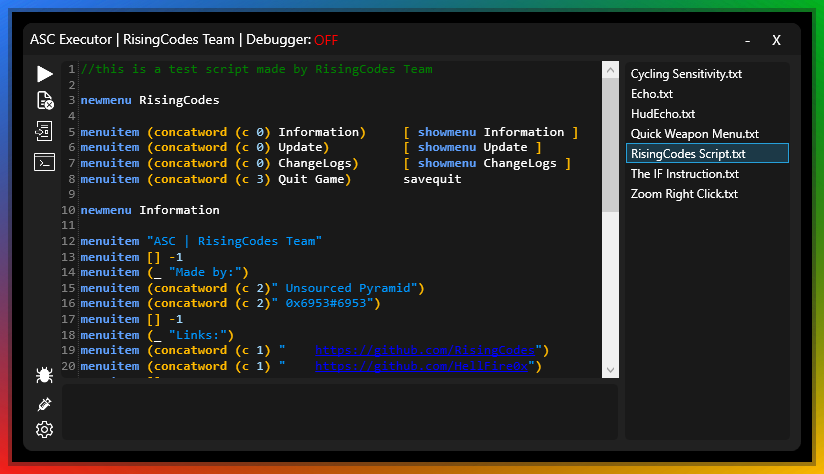

ASC Executor | RisingCodes Team
ASC Executor is a Assault Cube tool which allows you to execute CFG scripts in game even in a server. We built this tool to help developers to code their scripts. You can also use this as a hack or tool. We will also start projects on other games afther this release like Roblox, Gmod, CSGO, and more of these games. We will make a Multi-Hack
Built in functions:
Script executor
Name Spoofer
Debugger
UI
Script List
Colored Text Editor
Show Menu
Safe Quit
And a lot more...
How to get it?
You cannot get it yet since it is still in development. If you want you can join the beta development but it is far from release since we need to add more tools. We want to make this very powerful. Discord: https://discord.gg/m5mmcD5nWq
Images:
